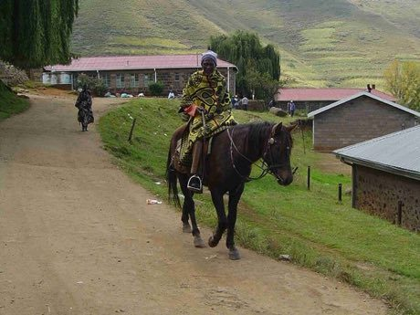

Home / Living Traditions / Africa: Southern Africa
Encyclopedia ID 201
Basotho blanket pattern designer
Mokhahlo / Seanamarena


Choose a base stripe and place bold geometric motifs and colour bands so the blanket's pattern matches a target design or a customer order.
Heritage note
Part of the living heritage of Lesotho.
Origins
A living tradition passed from person to person; it is not tied to a single dated origin. It belongs to the cultural world of Africa: Southern Africa.
Sources
Related entries

Ndebele geometric wall painting
South Africa · Crafts and making
Zulu beadwork letters
South Africa · Crafts and making
Capulana wrap cloth printing and tying
Mozambique · Crafts and making
Ebru paper marbling
Turkey · Crafts and making
Chinese knotting
China · Crafts and making
Matryoshka
Russia · Crafts and making